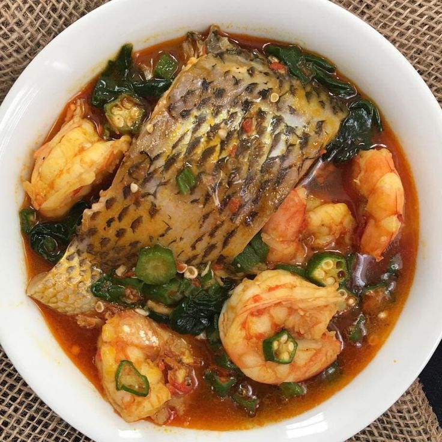

Fish Stew Recipe

Kenya has a ready supply of freshwater fish from Lake Victoria and salty water fish from the Indian Ocean. For this, most locals eat fried or boiled fish every week. The Kenyan fish stew comprises deep-fried fish served with stew or pan-fried to make the thick stew.
Ingredients
- Marinated fresh fish
- Oil
- Salt
- Tomatoes
- Onions
- Garlic
- Coriander
- Seasoning cube
- Broth
Steps
- Chop the fish into large chunks
- Marinate the fish in garlic, fresh ginger, and salt
- Deep fry the fish until brown and set aside
- Heat oil on a saucepan
- Add onions and garlic and cook until it caramelizes
- Add the fish and let it brown
- Add tomatoes and beef seasoning cubes
- Pour the broth and cover the stew
- Let it cook on low heat for 5 minutes
- Serve while hot